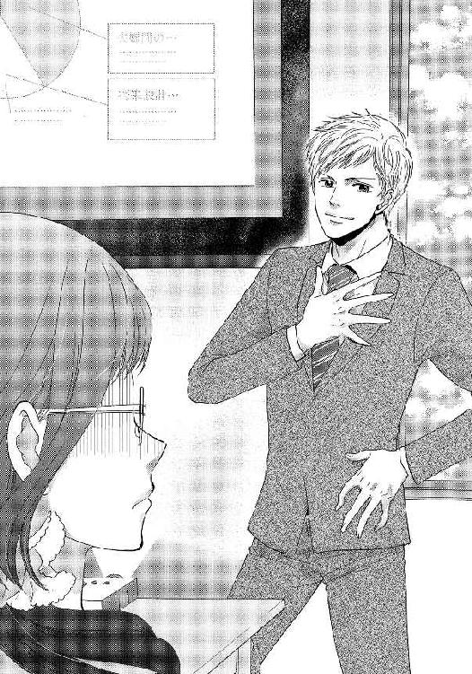
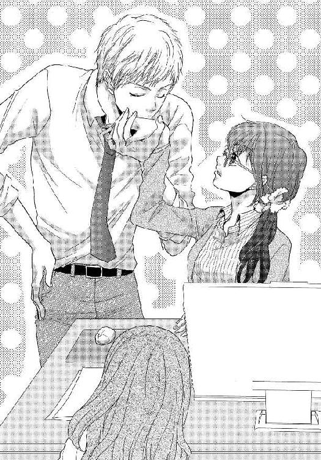
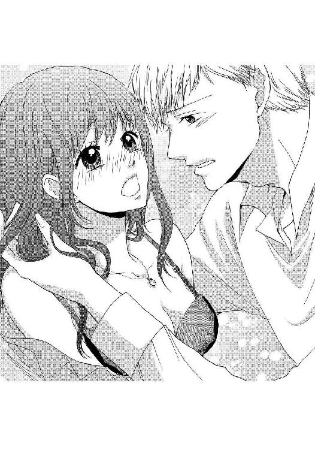
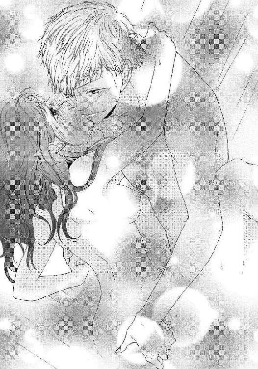

| エリート同期の溺愛プレゼン【イラスト入り】 (無敵恋愛S*girl) | |
| 栗谷あずみ | |
| 株式会社 ぶんか社 (2018) | |
株式会社 ぶんか社
エリート同期の溺愛プレゼン
栗谷あずみ・著
ひのもとめぐる・イラスト
※本作品の内容はすべてフィクションです。
実在の人物・団体・事件などには一切関係ありません。
子供の頃からトロかった私は、習字や図画工作で課題が出されると、必ずと言っていいほど居残り組だった。
担任の先生は、「関内さんは効率よくいろんなことができないだけで、何事にも一生懸命なんです」と親に話してくれたけど、そんないいものじゃない。優先順位をつけてひとつのことに注力することで、ようやくひとつを人並みにこなすことができる不器用っぷりに、時々、自分のことがイヤになる。
ともかく、中高では勉強、大学では語学習得と就職活動に精を出し、新卒で厨房機器の卸売専門商社、片倉商事に入社。
この春で社会人十年目の三十二歳。
今は販売促進部でチーフ格。
恋とかは、......知らない。
「あーっ、いっけね。営業部に頼まれてたやつ忘れてた。そのうちでいいからテキトーにやっといて、よろしくゥ〜」
定時近くになって、課長からキャンペーン案件のリストを渡された。量が多いが、期日は昨日までになっているし、週明けに回すと営業部の人が困るだろう。
私はそれまでやっていたことを一旦置いて、リストを入力しはじめた。
定時になって、販売促進部のオフィスから課長と派遣社員さんがそそくさと帰ってしまった後、向かいに座っている二十代の後輩社員が自分の仕事をしながらぼやく。
「うちの部署、関内さんのおかげで回ってますよね〜」
「持ち上げても何も出ないよ。中川さん」
「だって〜、課長ったら会議も書類も全部関内さんに押し付けて、全然仕事してくれないし。現場で仕事回す人間は減っていって、仕事は増えるばかりなのに、お給料は上がらないし、やってらんないですよ。派遣さんは社内恋愛ねらいで、仕事上は当てにできないし」
「決めつけるのは失礼よ。社員がそんなこと言ってたら、それこそ派遣さんのモチベが落ちるだけだと思うけど」
流行への感度の高い商社ＯＬを地で行くオシャレな後輩社員は、私の注意に、一瞬だけイヤな顔をした。
「ただのグチなのに、カタいこと言わないでよ」ってところなんだろう。
融通が利かない私は、上司や同僚から遠巻きにされがちだ。彼女はめずらしくそんな私にも話しかけてくれるのだけど、損得で人に取り入ろうとする下心が透けて見えるのが、少しニガテだった。
「でもぉ、オフィスじゃ関内さんがこわくて黙ってるけど、あの子たち、集まれば男性社員のスペックと合コンの話ばかり。会社の男なんてチャラいのに」
「......だから、決めつけないの。チャラい人も、そうじゃない人もいるわよ」
社員全員のことをよく知りもしないで、とカチンときながら、私は、鼻にかかった甘い声を聞き流す。
「たとえば？ さわやか系だと、営業部の戸塚主任とか？」
ぽろっと出てきた同期の名前に、心臓が軽く跳ねてしまった。
キラキラ女子にも意識されるような人なんだ、と驚くけれど、納得もする。
「確かに戸塚主任は、若手の出世頭で、イケメンで、独身なのがふしぎなくらい高スペックですけど、あの年まで独身って、きっと裏でえげつなく遊んでたりするんですよね。じゃなきゃ、理想高すぎとか......」
ネタだとわかっていても、知り合いをおもしろ半分で悪く言われるといい気がしない。
生返事でリストの入力を進めていると、やがて向かいの席で、パソコンの電源を落とす音がした。
表面上は申し訳なさそうなそぶりで、中川さんが言う。
「すみませぇん、関内さん。今日は婚活合コンなので、帰っていいですか？」
本当は営業部のリストを手伝ってほしかったのだけど、「人生かかってるんで」とばかりの鬼気迫るオーラに負けて、私は頷いてしまった。
まあ、ひとりでも終電近くまでやれば終わるだろうし、......その前にやろうとしていた仕事は、明日の土曜日に休日出勤してやれば、なんとかなる。
「ありがとうございます〜！ ほんと、関内さんがいないとダメですね、うちの部署」
中川さんは笑顔だったが、その顔には、「仕事に全部捧げるなんて時代遅れ」と書いてあるみたいだった。
しょうがないじゃない。
総合職として仕事を覚えるので必死だった十年間。ようやく職場で一人前と呼ばれるようになったかと思えば、婚活市場で「選ばれない」と言われる年齢になっていた。
恋愛ドラマのヒロインになれる方と、脇役しかつとまらない方。
すみ分けが決まってしまって、じゃあもう仕事の方で行くしかないんだなぁ、と思うしかないじゃない？
大学生の時、友達の紹介で一度だけ男性とお付き合いはしたけれど、長続きしなかったし、それからずっと彼氏はいない。出会いの場に誘われることも、二十代の頃はともかく、今はもうない。
『関内さんは効率よくいろんなことができないだけで──』
先生、それ、大事なポイントだったみたい。
先に知っておきたかったな......。
「よう。いつもの人」
時計が八時を回り、お腹の虫が騒ぎ出した頃、ひとりきりのオフィスに男の声が響いた。
「おー、戸塚くん」
「販促部、いつ来ても関内さんしかいないな。仕事押し付けられてない？ 上に話せる人いるか？」
「ありがと、大丈夫。キャンペーンのリストでしょ？ さっき、そっちの部署長にメールしたけど」
「受け取ったよ、助かった。今日先方から催促されてヒヤヒヤしてたから。サンキュな」
戸塚くんは私のデスクまで来ると、ぺこ、と頭を下げる。同期の彼の前だと、私も肩の力が抜けて、自然体でしゃべることができた。
「遅くなってごめんね」
「いや。関内さん、このせいで残業なんだろ？ 営業代表で、お礼しにきた」
「わ、やったね」
戸塚くんがひょいと渡してくれたのは、老舗のどら焼きだ。以前、ここのが一番好きだと教えたことがある。覚えていて、買ってきてくれたのだろうか。
仕事だから当たり前とはいえ、こうして感謝の気持ちを示されると、こっちも人間なので、嬉しくなって、またやってあげよう、という気になる。
うまく転がされてるな、と思うけど、憎めない。昔、クラスにひとりはいた人気者タイプだ。
同期で一番に出世してもエラぶらず、勉強熱心で。相手を問わず親切で、気さくで。
味方もファンも多いだろう。
まだ軽薄さが表に出ていた彼の新人時代を思い出し、成長したな、としみじみしてしまう。お互い様なんだろうけど。
どら焼きのお礼を言おうとすると、甘い匂いにつられ、先にくーっ、とお腹の虫が鳴いてしまった。
戸塚くんは、隣のデスクの椅子を引いて、腰を下ろす。
「この時間、腹減るよなぁ」
「減る」
「俺も食おっと」
「じゃ、どら焼きのお礼に、お茶を入れてしんぜよう」
「ははーっ、感謝」
私たちは、お芝居じみた言い回しでげらげら笑い合いながら、給湯室で入れてきた緑茶で一息ついた。
私は、すぐ耳に痛いことを言ってしまうからか、部署でこわがられているようだし、ランチ友達もいない。そんな中、気をゆるせる同期とのおしゃべりは、心がはずんだ。
戸塚くんは皆に慕われていて、人恋しいわけはないだろうに、息抜きによく遊びに来る。近い距離感で話せる相手は、あまりいないのだろうか。
恋人事情は、どうなんだろう。
中川さんが言っていたうち、「えげつなく遊んでる」ことはないだろうけど、いろんな女性を見て、理想にかなう人を品定め中なのかもしれなかった。
「いい顔で食うよな、関内さんって」
「あれ、観察してた？」
私がぼんやり考えごとをしている間、どうやら見られていたらしい。
「見とれてた」
戸塚くんがにっこり笑いながら、さらっと口説き文句を仕掛けてくる。
軽口とわかっているけど、潤う。正直。
干物の私でも、フワフワ、浮わついた気持ちは持っているのだ。
「......私相手に、何言ってんのよ」
顔が赤くなりそうになるのをごまかしながら、私は答えた。
「塩対応だなぁ。こういう話ＮＧ？」
「まさか。いい加減ウェルカムだよ。ご縁がないだけ。もう機会もないかな」
「なんの。これからだろ。関内さん、いい女だもん」
自虐する干物にまで優しいことを言ってくれる戸塚くんにほだされてしまいそうだ。
イケメンというのは、呼吸するくらい自然に、全方向の女にリップサービスしてくれるものなのか。モテるはずだ。
私は仕返しのように、戸塚くんを観察してみた。
彼は、スーツのジャケットを脱いだ社内仕様で、軽くまくった袖からのぞく、筋肉質な腕が色っぽい。
清潔感のある短い髪も、目のそばに刻まれた笑いジワも、男らしいアゴのラインも、シャツできゅうくつそうな首元も、セクシーだ。
やっぱり、異性としては高嶺の花、というのが私の正直な気持ちだった。
それに同僚としての付き合いが長いから、彼のことを今更恋愛対象とは思えない。
けど、この戸塚くんが選ぶほどの女性は見てみたかった。結婚式には、同期のよしみでぜひ招待されたいものだ。
翌週、たまった仕事を片付けるために部署でただひとり休日出勤した私は、パソコンのスケジュールに表示されたお知らせを見て、首を傾げた。
『会議出席依頼 営業戦略会議 本日17時〜18時 第二会議室』
休みの日に会議はない。日付を間違えたのだろう。そう察しをつけて送信者を見ると、そこには戸塚くんの名前が表示されていた。
何度か内線電話をかけてみたものの、誰も出ない。
私は、めずらしいミスをからかってやろうというイタズラ心と、休憩がてらおしゃべりしたい願望にかられて、開始予定時刻の五分前に第二会議室へ向かった。
会議室には、既にプロジェクターとスクリーンがスタンバイ済みだった。もちろん私以外は誰も来ていない。室内にいた戸塚くんはまだピンとこないらしく、唯一現れた私を見て、空席を示した。
「座ってくれ、関内さん」
「会議するの？ 今日は......」
「いいから」
休日だと伝えようとしたが、戸塚くんのバリッと気合の入った営業モードに気おされて、とりあえず着席してしまう。
「......今日、土曜だよ」
「わかってる。休みの日に悪いけど、五分だけ俺にくれないか」
「いいけど......」
どういうことなのだろう。私は様々な可能性に想像をめぐらせた。
一番ありえそうなのは、大口のプレゼンが近いから練習させてくれ、という事情だ。
彼が緊張してるところなんて見たことがない。きっとよほどの案件なのだ。
そう察しをつけ、同期のよしみで協力しようとした親切心は、意外な形で裏切られた。
『新しいライフプランのご提案』
『戸塚渉と結婚する五つのメリット』
『結婚の費用対効果・競合比較』
目を疑うような言葉が、次々とスクリーンに映し出される。
結婚!?
開くファイルを間違えてない？ と突っ込みたくなるが、私に口を挟ませるスキをつくらず、戸塚くんはプレゼンを続けた。
「......このように、家賃などの生活費をふたりで折半し、各種保険や手当を活用することで、現状の単身生活より生活の質を向上させることができると考えます。財政運営の安定の他、一緒に暮らすことで家事や各種手続きの負担を分散。何かあった時の三百六十五日・二十四時間バックアップの安心感。朝起こす、料理を作る、グチを聞く、旅行に連れていくと楽しい、など、俺ならではの特典もご用意。ライフプランを見直し、俺を伴侶としてご活用いただくのが本件のゴールイメージです。あなたの生活が継続的に発展するためのお手伝いをさせていただきます」
これをまじめな顔でやり切るのだから、恐れ入る。プレゼンはプレゼンでも、売り込んでいるのは弊社の商品じゃなくて、彼自身だ。

「......以上です。何か質問がございましたら」
プレゼンは最初に言われた通り、五分ちょうどで終了した。
さすが弊社の誇るトップセールス、図やグラフが的確に使われていてわかりやすく、論旨が明瞭で、発表者の思いもよく伝わる、いいプレゼンだ──と褒めてあげたいのはやまやまだ。しかし。
「戸塚くん。これ、プロポーズ？」
「そうだよ」
気心の知れた私なら、彼女へのプロポーズの練習台にしたって、勘違いしないと思ったのだろうか。独身仲間を巻き込んで悪びれない戸塚くんに、私はふくざつな気持ちを隠せなかった。もしかしたら、置いていかれるさびしさかもしれない。でも、祝福してあげないと、と思い直した。
「いいんじゃない。彼女、喜ぶよ」
「彼女？」
戸塚くんは怪訝そうな顔をする。
「本番は。これ、練習でしょ？」
「──鈍いな、関内さん」
戸塚くんは私の前まで来ると、テーブルに片手をつき、顔をのぞきこむようにした。ばかにするような言い方にムッとするが、爆弾級の言葉が続いて、それどころではなくなる。
「プロポーズしたの、関内さんに、なんだけど。俺との結婚、前向きにご検討いただけますか？」
何を言ってるの？ この人は。
私はびっくりしすぎて、しばらく声も出せなかった。
想定してない。
想定してなかったぞ。こんなの。
私は仕事に集中することで、突然投げ込まれた急展開から意識をそらそうとした。
なのに。
「関内さん。こないだの件、今日こそは、いい返事聞かせてくれない？」
こんな時に限って、私はオフィスの階段で、ばったり戸塚くんと出くわしてしまう。
出勤している人の少ない休日ならともかく、皆のいる平日の午後だ。
「ちょっ。誰かに聞かれたら......」
人気者の彼が、まじめだけが取り柄の私を口説いているなんて、笑い話にもならないだろうけど、それでも困る。私のささやかな日常を壊す権利はないはずだ。
戸塚くんだって、仕事せずに遊んでいると思われるのは不本意だろう。
「じゃあ、イエスかイエスで、端的に答えてくれれば」
「お断りの余地なしってこと!?」
「そんなことないけど、イエスの方が絶対おすすめ。後悔させない自信はある」
「自信家だね、知らなかった」
私はあきれ半分、イヤミ半分で言ってみたけど、戸塚くんに響いた様子はなかった。
「双方にメリットのある提案だと自負してるから。俺とのけっ......」
「わーっ！ わーっ！」
結婚、という言葉が出そうになったので、思わず声でさえぎる。
私、職場でそんなことするキャラじゃないのに......かんべんしてよ。
からかわれているだけなら、そのうち向こうが飽きて終わるだろう。
そう思っていたのに、戸塚くんは業務時間中も含め、あの手この手で、私の平常心を揺らそうとしてくる。
──ある時は、私の両隣の席に誰もいない時、戸塚くんがデスクに半分記入済みの婚姻届を滑り込ませてきたり。
「関内さん。この契約書なんだけど」
「............。この契約書はうちの部署の管轄じゃないですね。あしからず」
──ある時は、戸塚くんの携帯電話から、私の部署に電話をかけてきたり。
『もしもし、関内さん？ 出先なんだけど、愛しいハニーの声が聞きたくて』
「えっ？ 関内さん、今、電話、ガチャ切りしませんでした？」
「......ファックス番号とお間違えだったみたい」
──別のある時は、社内便の封筒で、堂々と「営業部 戸塚」と記名の上、ネックレスを送り付けてきたり。
「戸塚くん、社内便で、仕事に関係ないもの送らないで」
「買い物中、ウインドーで見かけて、関内さんの顔が浮かんだから。指輪はやっぱりふたりで選びたいし」
「選ばないし！」
私をからかうためにお金までかけて、本当に謎すぎる。
それ以上ほうっておくと何をするかわからなかったので、私はプレゼン翌週の土曜、オフィスを訪れた戸塚くんを隣の席に座らせ、コンコンとお説教した。
「いい加減にして。仕事にならない！」
「俺に口説かれるの、めいわく？」
「ていうか、からかわれてるとしか思えない。モテるの知ってるんだから」
「他の女の子たちがいいな〜って言ってくれるくらいの男じゃないと、振り向いてもらえないだろ。努力するくらい愛してんの。うぬぼれてくれないかな」
「ますます釣り合わない。私は他の男の人に、いいな、って言われたことないし」
「社内は、同期の俺が仲いいから、遠慮してるやついると思う。同期飲みでも、俺たち、わりと最初から意気投合して、ふたりで二次会抜けとかしてたじゃん」
「色気のない理由でね」
新入社員の頃、私たちは研修をかねてショールームに配属され、自社製品を案内していた。
社会人になりたての不安も手伝い、週末になると、同期飲みと称して皆で繁華街に繰り出したが、私は翌日の仕事に響かないよう、途中で帰ることが多かった。
そこに、いつの間にか便乗するようになっていたのが、戸塚くんだ。
抜け感のある見た目によらず、仕事に熱い人で、ショールームの売り上げをあげる方法なんかを道々に話しているうちに、意気投合していた。
私が売れ筋や客層を分析し、戸塚くんが接客するという流れで、新人にもかかわらず大物をご成約いただいたりして、結構当時はいいタッグだったと思う。
配属が分かれた後は、花形の営業部で成績を上げつづける彼と少し距離を感じるようになってしまったけど、当時は遠慮のカケラもなく、対等に意見を戦わせていた。
もっとも、そんなことばかりしていたから、「女に見られるわけがない」という意識の基礎ができあがってしまったのかもしれない。
「懐かしいな。俺、人当たりいいし、口もうまいし、ちょっと世の中ナメてて」
「自分で言う？」
「いや、それで、大学までは苦労しなかったんだけど......覚えてる？ ショールームで、俺が口先だけのトークで売ろうとして、お客様を怒らせてしまった時のこと。......関内さんが、持ってる商品知識で助け船出してくれたんだよな」
「............」
「その後、照れくさくて『感謝！ また助けて！』ってテキトー言ってたらさ。関内さんはクールに『戸塚くんはできるけどやらないだけ。ちょっとずるい』って言ったんだ。見透かされたみたいで、ドキッとした。何でそんなこと、ってとっさにムッとしたけど、それは俺の器が小さかったからで......その後、商品のこと頭に叩き込んだら、その知識に助けられることが増えてきて、ああ、関内さんに言ってもらえて良かったって。良薬は口に苦し、って言うけど、俺みたいなやつには、持ち上げていい気分にしてくれる彼女より、耳に痛いこと言ってくれる嫁が必要だって思って、意識しはじめた。そしたら、関内さん、人のための発言ですぐこわい人って誤解されるし、人目につかないところでがんばってるのに気付かれないし、見ててやきもきして......」
「......はは、自業自得だよ」
「人を責めないしさ。いい女だから、俺が守りたいって」
責任感が強く、孤独を感じやすい自分を丸ごと包み込んでくれるような言葉に、涙腺がゆるみそうになった私は、無理やり明るい声を出した。
「......戸塚くんが、そんなこと思ってたなんて、初耳なんだけど」
「関内さんが言ったんだろ。『彼氏いる？』って探り入れた時。『仕事で一人前になるまで作らない』『不器用だから十年くらいは仕事で手いっぱい』って」
「......言った......っけ......？」
全然覚えていない。その言葉を、戸塚くんは真に受けたのだろうか。
戸塚くんは立ち上がり、私の耳元に低い声を注いだ。
「十年経ったし、こないだ、もうウェルカムだって言ったよな。だから、本気で迫ることにしたんだけど」
「え、ま、待って」
「新人の頃は話にならなかったかもしれないけど、今の俺見て、いいな......って少しも思わない？ 近付いたり、こうして手が触れて、ドキドキしたり」
「それは......吊り橋効果......」
誰かに見られたら困るからだ、と言い訳のように思うけど、確かに心臓は大きく脈打つし、全身がぽかぽかする。
手に手を重ねられる感触に、顔も体もますます熱くなり──。
「ちょ、お、お化粧室行くからっ！ いい加減、戸塚くんも、仕事に戻ってっ、いいわね！」
私は戸塚くんの手を振り払って化粧室に駆け込み、彼が諦めて自分のオフィスに戻るまで、立てこもることしかできなかった。
戸塚くんがひんぱんに販売促進部に顔を出すようになってひと月ほど経ったある日、後輩社員の中川さんが、平日より気合の入った格好で休日出勤し始めた。
「戸塚主任、最近よくうちの部署に来られますよね〜。どうしてかなぁ。やっぱりかっこいいし、思ってたより誠実そうな感じですよね」
「......そう？」
人目をひきやすい戸塚くんのアプローチに弱り切っている私をよそに、中川さんは盛り上がっている。
「ドーナツ、買いすぎちゃった。営業部の人は休日よく出社してますよね。差し入れに行ってこようかな」
「なんで？ 用でもあるの？」
たずねると、中川さんは長いまつげを揺らした。
「......わかりません？ そっか。同期の関内さんに協力してもらった方がいいかな。実は、戸塚主任のこと気になりはじめて。どんな子がタイプだと思います？」
中川さんは、かわいくて、細くて、人懐っこくて、男なら誰でもぽーっとなってしまいそうな女性だ。こんな子に告白されて、気持ちが揺らがない人はいないだろう。
ひとつも勝てるところがなさそうなキラキラ女子を前にすると、私など、完全に脇役、引き立て役だ。落ち込んでしまい、視界が狭くなっているところに、甘い声で戸塚くんの来訪を知った。
「あ〜！ 戸塚主任〜」
「中川さん？ 休日出勤とかするんだ」
「はい。いつも関内さんが完璧に回してくださるのに甘えてるんですけど、少しは力になれたらなって」
「それはエラいね」
年下女子に優しく微笑む戸塚くんに、ちくり、と胸が痛んだ。
......なんで、私、傷ついたんだろう。
優秀な彼と釣り合いが取れないことに悩んで、好意がうまく受け取れないのなら、お似合いの女性が現れることを歓迎してもいいはずなのに。
私は、合理的に説明できない自分の感情をなんとか整理しようとした。
戸塚くんはきちんと仕事する私を見てくれた人だから、先輩を気遣って休日出勤したという中川さんにも悪い印象は抱かないだろう。
......中川さん、いつもプライベートを優先してきたくせに。まじめは損だってばかにしてたくせに。戸塚くんの前でだけ、いいところ、取らないでよ......。
彼女とは生き方が違うんだと割り切ってたはずなのに、どす黒い感情が湧き上がってきて、そんな自分に面食らった。
私が自分の感情を持て余して話に入れない間も、中川さんは感じよく戸塚くんに話しかけつづけている。
「戸塚主任こそ、休日までいらっしゃるなんて、仕事熱心であこがれます」
「ああ、俺は単に、この人を口説きに来てるだけだよ」
......今、なんて言った？
戸塚くんの言葉に、私は耳を疑った。
「しゅ......主任、からかったらダメですよ。関内さん、ふまじめなノリ、ニガテなんですから」
「よく知ってる。だから、からかってるんじゃなくて、本気」
「まさか......そんな」
中川さんは、「こんなもっさりメガネのどこがいいの？」と、信じられなさそうな様子だ。そんな彼女に見せつけるように、戸塚くんは私の手を拾い上げ、ちゅ、と勝手にキスをした。
一瞬のことだったけど、柔らかい感触に、頭が真っ白になる。

「ちょ......！ 何、する......」
「こんな調子で、苦戦させられてるのは俺の方。だから......」
「......はいはい、お邪魔なんですねっ！」
中川さんは、これ以上この場所にいるのは不快で仕方ない、というように、足音を立ててオフィスを出て行った。
「あー......どうするの、これ。噂になっちゃうよ」
月曜日、中川さんにどんな顔で会えばいいんだ、と悩む私に、戸塚くんは心臓が凍るようなひと言を投げた。
「フッたって言えばいい」
「えっ」
「俺のことイヤならね。だいぶ強引に《契約》迫ったけど、無理強いするつもりはないから。迫ったのが噂になっても、笑われるのは俺だけだし、それは自分がしたくてやったことだから気にしない」
「............」
いよいよ決断を迫られているような気がして、手にじんわりと汗が浮かぶ。
確かに、突然《契約》の話なんてされて困ったけど──でも、フッてしまったら、これから先、気安く話すこともなくなってしまうのだろうか。それはさびしい、と、私は勝手なことを思ってしまう。
じゃあ、元の関係に戻れれば、それでいいのかと問われれば、それも答えが出せない。
手にキスまでされたのに、ただの同期に戻れるだろうか。
「ねえ。俺のこと嫌い？」
「......嫌いとか、好きとか、そういうの、よくわからなくて。仲もいいし、信頼もしてる。魅力もあると思うけど、付き合うイメージが湧かないの。私、経験もあまりないし、女らしくないし、うまくいくか......」
「それは確かに問題だな。よし」
「よしって、何が？」
きっとうまくいかないと、断ったつもりが伝わっておらず、私は疑問符を浮かべる。
戸塚くんは私の不安を取り除くように、さばさばと屈託のない調子で返した。
「正直な気持ちが聞けたから、一歩前進。脊髄反射でダメって言われても、どうしようもないから。じゃあ、プライベートの俺のこと、次は知ってください」
翌週の土曜の正午、私は戸塚くんのマンションを訪れることになった。
いきなり家にふたりきりなんて、とは思ったけれど、私の方が無趣味で、映画も運動も外食もショッピングも興味がないので、デートの選択肢が少なかったせいもある。
戸塚くんの家は、最寄り駅から十分ほど歩いた先の閑静な住宅街にある、十階建てのマンションの一室だった。
管理人室のある立派なエントランスからして、単身者用マンションには見えないね、と正直な感想を言えば、元はファミリー向けの分譲マンションの一室だと返される。
「知り合いに便宜をはかってもらって、賃貸で入れるようにしてもらったんだ。それもこのため。自慢のキッチンを見よ！」
「あっ、うちの一押しの......」
「やっぱり扱ってると、使ってみたくなるのよな。で、大事に使ってると、ふしぎと愛着が湧くんだ」
戸塚くんの言葉通り、カウンターと一体になったアイランド型の対面キッチンは整理整頓されてピカピカだった。
そのキッチンで、戸塚くんは、生ウニのクリームパスタを作ってくれるという。
「何か手伝おうか？」
「いや、お客さんは座ってて。手持ちぶさたなら、これでも眺めてたら」
戸塚くんに電話帳のような厚みで有名な雑誌を差し出されて、驚いた。
「結婚情報誌なんて、どんな顔して買ったのよ......」
好意的な返事なんて、一度もした覚えがないのだけど、戸塚くんのゆるぎないポジティブさに、私までつられて楽観的になってしまいそうだ。
フカフカのソファをすすめられ、「自由に見てくれ」という言葉に甘えて、リビングを見渡した。
落ち着いた色で統一された家具家電。すっきりした収納。悠々自適な男のひとり暮らしの完成形みたいな部屋に住みながら、結婚願望が強いって、変わっているなぁ、と思う。
十年同じ職場にいて、どんな人か大体わかったつもりだったけど、私生活には意外性と納得が溢れてて、好奇心と、職場の誰も知らないことを、私だけが知っているという特別感が満たされた。
「休みの日は何してるの？」
私の質問に、スーツを見慣れた目には新鮮な私服姿でフライパンを振りながら、戸塚くんは答える。
「予定がなければ、出かけることが多いかな。キッチン家電とか食材とか、ぶらぶら見て回ったり。関内さんは？」
「うーん、家で寝てるか、リフレッシュがてら銭湯に行くか......」
神経のすり減る激務や休日出勤が多かったからではあるものの、花の二十代を寝て過ごしてしまったと認めたくない私は、必死に何をしていたか思い出そうとした。
「なんだかんだ、仕事のための勉強もあるじゃない。別に仕事が何か返してくれるわけじゃないんだけど、ひとつのことしかできない性格で、続けてきちゃった。戸塚くんは、営業で成績出して、会社の役に立ってて、......いいな。立派だと思う」
「何で？ 商品が売れるのはメーカーさんがいい商品作ってくれたからで、広報や販促の戦略が響いたからだろ。俺たちは受注するだけで、何もしてない」
「何もしてなくないよ......」
「ありがと。関内さんは厳しいけど、そうやって俺のこと『サボらずやってるな』って見ててくれてるんじゃないかって......勝手に励みにしてた。うぬぼれかな」
「......そりゃ、ど、同期だし......」
「ごめん、聞こえない。......もうできるから、冷蔵庫からサラダとドレッシング出してあえてくれる？」
「了解」
また妙な雰囲気になりそうだったから、調理の音に邪魔されてよかった、と思いつつ、私は立ち上がり、戸塚くんの脇の調理台へ、冷蔵庫から出したサラダボウルとドレッシングを置いた。
「わ、わーっ！ 何するの」
火を落とす音とともに、背後から両腕を回され、戸塚くんの体に包み込まれるような体勢になる。
頬に吐息が当たり、抱き締められている、と勘違いしそうな距離の近さにどぎまぎした。
子供じゃないんだから、ひとり暮らしの家に招かれて、何も起こらないと思っていた、とは言わない。
だけど、やっぱり恥ずかしい。
「ごめん。感情が高まったタイミングだったもんで、つい」
戸塚くんはあっさり体を離して、茶目っけのある表情をした。
「つい、キスしそうになっちゃった」
油断もスキもない戸塚くんに、私は歯ぎしりするほかない。
その後、ふたりでカウンターに食卓を整え、戸塚くんの料理に舌つづみを打った。
「ごちそうさま。お店のよりおいしかった。家で毎日こんな料理食べられるなんて、自炊趣味っていいね」
「食材費だけで安く済むしな。食べてくれる人がいると、張り合いがあるって、新発見」
「私が仕事で手いっぱいだった間に、戸塚くんはプライベートもこんなに充実させてて......置いていかれたような気分」
「そんな大げさなことじゃないよ。仕事が大変な分、家では居心地よく過ごしたいから、必要なものをそろえてきただけ」
戸塚くんは、視野が広いし、自分で決めた将来にどう近付くか、仕事以外のところでも戦略を立てて動いている。
大人だな、男らしい人だな、と、私は改めて彼の魅力を再認識した。
「あ、片付けくらい私にさせて」
私は、食器を下げてくれようとする戸塚くんを慌てて止める。
「いいよ。お客さんだし」
「それくらいはさせてもらわないと」
「じゃあ、お言葉に甘えて」
やってもらうばかりは性に合わない私の性格を知っているからか、話が早くて助かった。
シンクは清潔で使いやすく、鼻歌でも歌いたい気分で洗い物をしていると、カウンターに頬づえをついた戸塚くんと視線が合う。
「......何見てるの？」
「うん。誰かと一緒に過ごす休日って......くつろげる家に、好きな人がいてくれるって、やっぱり最高だな、って。新婚気分だ」
新婚、という言葉のインパクトに、私はすっかり心拍数をあげてしまって、何も言うことができなかった。
「力入れずに、何げない話をしてさ。ごはん作って、食べて。俺はそういう生活をずっと思い描いていたし、相手は、関内さんだったら......って、思ってた。もちろん、そっちの希望もあるから、無理は言えないけど......」
カウンターを回り込む戸塚くんに、私は水を止め、手を拭いて振り返る。
逃げようと思ったら逃げられた。
だけど。
「......関内さん」
近付いてくる唇から、私は逃げなかった。
目を閉じて、柔らかい感触を受け止める。
......イヤでは、ない。
「どう？」
「変な......感じだよ。同期と......」
「まだ、それ言う。上書きしてくれるまで、キス、やめないから」
戸塚くんは、私の唇を、角度を変えてついばむように食んだかと思うと、ちゅ、と音を立てて吸う。
くすぐったい感触と胸の高鳴りに、頭がぼうっとした。
キスといえばマシュマロが触れ合うようなもの、という私の思い込みを壊すように、戸塚くんのそれは雄弁で官能的だった。
甘いささやきのようにノックしたかと思えば、ちろりと舌先で舐めて挑発し、私が固く閉ざした唇をおそるおそるほどけば、そっと口腔内に舌を這わせ、唾液の味まで知りたいと言うように、興味を持ってまさぐってくる。
ひとつひとつの愛撫に気持ちが通っていて、会話みたいだ、と思った。
言葉はないけど、触れてくる感覚ごしに、戸塚くんの考えていることや、愛情の深さ、あるいは欲情の昂ぶりが流れ込んでくるようだ。
キスの先に進みたいと、甘い誘惑を仕かけてくるのが、わかる。
「......戸塚くん」
「気分変わってきた？」
私の体がほてるように熱を溜めているのを見透かしたようなタイミングで、戸塚くんは唇を離し、首を傾げた。
粘度のあるまなざし。
彼は私のことを、同期だなんて思っていない。女を見る男の顔だ。
その、無防備なくらいむき出しの表情に、思考よりも先に体が反応して震える。
「キスの邪魔だから、メガネ外していい？」
戸塚くんの鼻に当たったりしていないのに、そんなことを言われた。ダメとは言えずかすかにアゴを引くと、戸塚くんが私のメガネのフレームに手をかける。
視界が頼りなくぼやけた後、後頭部へ回った手に、シュシュまでほどかれた。
ひどいことをする人ではないとわかっているけど、今からメガネやシュシュが外れるくらい激しいことをする、と宣言されたようで、......さすがに妄想が過ぎるだろうか。でもドキドキしてしまう。
ほどけた私の髪を撫で、首筋をなぞりはじめた戸塚くんの指先が、ふと動きを止めた。
その理由に気付いた私は、あっと息を止める。
「......俺があげたネックレス」
「か、返すって言っても聞かないから。もったいないから」
襟ぐりが狭いシャツの下に、こっそり身につけていたネックレスの端を、戸塚くんは、意味深にくすぐった。
「せっかくつけて来てくれたのに、見せてくれないなんてな」
「今、見てるでしょう......」
「初めてのプレゼント、関内さんに似合うものちゃんと選べたか、見せて」
「......ん」
言葉だけなら、初恋に落ちた中学生のように無邪気だったけど、戸塚くんの視線は大人のズルさをたたえていたし、私の同意を得て、シャツの前ボタンを下から外していく手つきは、やらしい。
心臓の音が、体の外まで響きそうだった。
前をはだけられた私のデコルテで光るストーンを見て、戸塚くんは満足そうにうなずく。
「似合う。きれいだ。嬉しい」
彼の目に映るもの──素肌やブラジャーを晒した自分を想像して、涙が出そうなほど恥ずかしかったし、服の下の私の体に失望した様子がなくて安心したし、そんな彼がこれから素肌に触れてくることを期待もした。
そう。ずるさを持っているのは、戸塚くんだけではなかった。

私の方がひどいかもしれない、とさえ思う。恋になんて落ちてやらないって態度で憎まれ口を叩いて、茶化してごまかして、ごまかしきれなくなったら逃げ出して──。
私にはわかっていた、戸塚くんに問題があるわけじゃないと。すべて、ヒロインが似合わない自分に向ける自虐、勘違いで傷つかないためのストッパーもどきだった。
戸塚くんの好意が信じられず、自分がそれを受け取る資格を持ってるとも思えなかったから、欲しくないですって顔をしていた。
でも、それは嘘だと、私にはもうわかっている。戸塚くんに求婚されて、びっくりもしたけど、本当は嬉しかった。
脇役として生まれたような地味な私だって、ヒロインになって、素敵な人に愛されたい。
戸塚くんのがっしりした腕に抱き寄せられたまま、私はほんの少し勇気を出して、自分の腕を彼の腰に回した。
ぎちっ、と彼の筋肉が固くなる。
その理由を想像して、私は反省した。
戸塚くんの方は求婚プレゼンまでして、ぐいぐい迫ってくれたけど、私の方は彼への好意をまったく形にしていない。いくら彼がポジティブで自信たっぷりだとしても、これでは、不安にさせてしまっても仕方なかった。
申し訳なさが、臆病な私の背を押す。
「あの......戸塚くん、引かれないといいんだけど」
「引く？ 何に」
「いや、こわいんだよ。この年齢から、恋愛モードオンにするのはさ......。だけど、その......」
ちゃんと気持ちを伝えた方がいい、と決心したはいいものの、なかなか言葉が見つからない。
私の目を見て話を聞くため、上半身を引いた戸塚くんの、下半身は私のそれと密着して、布ごしに体温より高い熱と、今にも制御を離れそうな興奮の滾りを伝えてきていた。
それでも戸塚くんは性急に話を終わらせようとはせず、低い声で私をうながす。
「......何？ 関内さん」
「............」
「言って。一言でいい」
全身にじっとりと汗が浮かんだ。
からからに喉が渇く。
いっそ、察してよ、沈黙の長さで。
と喧嘩腰で思ってしまうけど、それだって照れ隠しだと自覚してしまった後だ。
ええい、出ろ勇気。言ってしまえ。
自分を鼓舞して、口に出した。
「..................好きになって、いいの？」
「あ、ちょ、っ、もう、......何よう......」
私の口だけの反発に、もう効果はない。
「ひゃ......。ちょっと、休ませ......戸塚、くんたら......ああっ」
はだかの脇腹にキスされて、柔らかい手つきで両脚の間の柔毛を撫でつけられると、体の力が抜けてしまう。
乾く間もない脚の奥が、きゅん、と疼いて、新たな蜜が滲んだ。
キッチンからリビングの床にかけて、私と戸塚くんが今日つけていた服と下着が、たたまれもせずに点々と散らばっている。
元がきれいな部屋なだけに、その光景が目に入るたび、奔放でやらしいことを今まさにしている、という実感がわいた。
キッチンで始まった男と女の行為は、もう何度か互いに頂点を見ている。
正確に言うと、戸塚くんが射精したのは二回で、......数えきれていないのは、私がイッた回数の方。
久しぶりすぎて、最初のうちは体がガチガチに緊張していて、声も出せず、指一本動かすこともできなかったのだけど、胸や脇腹への愛撫に理性をトロリと溶かされた後、後ずさりする最中に下着まで全部脱がされ、床に押し倒されて戸塚くんの昂ぶりを何度も脚の間の襞に突き込まれ、ひとしきり乱れた後は、体に力も入らず、意地も張り切れず、もはや、ぐだぐだだった。
全力疾走の後のような呼吸がおさまるまで床に転がっている間は、冷静にもなるのだけど、再び触れられると、これまで戸塚くんに与えられた刺激を思い出すのか、体は進んで力を抜いてしまう。
それにしても、寝室に行く暇くらい、なんとか、ならないものなのか。
そんなことにも思いいたらないくらい、戸塚くんは、ケモノのようにがっついていた。
「関内さんがかわいいこと言って、俺の理性飛ばしたせいだろ......。我ながら、十分長くガマンしてきたと思うぞ」
「それは、そうかもしれないけど、戸塚くんがそういう気持ちだって、私、知らなかったんだし......あ、あっ」
暴かれた肌は、どこも敏感になっている。
さんざん愛でられ、撫でられただけでじん、と快美が走るようになった乳首を、二本の指につまみ出され、スリスリとこすられ、私の背中は弓なりにそった。
「やーらしい声......。惚れた女が、待ってほしいって言うんなら、いくらでも待つけどさ。その間、変な男がしゃしゃり出てきてあんたをかっさらっていくんじゃないかとか、そばで見張ってるつもりでも、気が気でなかったんだから」
戸塚くんは、私の脚の間に手を伸ばして、潤んだ襞の外側をヌルヌルとなぞる。
指の先を花びらの中に潜り込ませて、ぬぷ、ぬぷっと入口の辺りで抜き挿しされると、中に溜まっていた蜜がトロトロと掻き出されてきた。
「んぅ......、いるわけ......っ、ア、ないじゃない、そんな物好き」
「少なくともここにひとりいますけど？」
私の体の開き方をあっさり習得した戸塚くんが、両脚を割り開き、張り詰めた性器を押し当てる。
入口に何度かこすり付けられると、体の中から揺さぶりあげられるような快楽を求めて、襞の奥がきゅんきゅんと収縮した。
勝手に腰が揺らめくけれど、戸塚くんは三度目で余裕ができたのか、そんな私をゆっくり観賞しようって魂胆らしく、なかなか挿入にはいたらない。
快楽の火に煽られきった私は、欲しいものがなかなか与えられないことに焦れて、涙目で罵倒した。
「あ、あっ、あ......ん、も、戸塚くんのばかっ、しつこいっ」
「しつこい？ 営業には誉め言葉だよ。諦めは悪いし、見つけた弱点はつく」
「あっ〜......、ン、ッ、ああっ、ダメ」
ゆっくりと、濡れた膣穴を押し拡げるようにして、戸塚くんが中に入ってくる。
出っ張ったカリ首の部分で、お腹の裏側をこすられると、頭の芯がびりびり痺れた。
「ここが好きなんだよな、関内さんは」
言われた通りなのだけど、与えられた快楽が大きすぎて、ふーっ、ふーっ、と乱れた呼吸をすることしかできない。
疼きを溜めている箇所にようやく刺激を得たのに、一回撫でられただけでそれ以上与えられないのでは、満足するどころか、逆につらかった。
「う......っ、っ、ふ、ぁ、ああ」
滾った楔で体を串刺しにされたまま、ますます腰を揺らしてしまう。
当たり方が変わって、ぞくっ、ぞくっと甘い火花が散るけれど、満足できる強さには程遠かった。
もどかしい。
柔らかい襞は先をねだるように剛直に絡みつくけど、戸塚くんの反応は薄かった。
「と......戸塚くん、もう......」
焦れ切って、とうとう戸塚くんの腰に手を回すと、
「欲しい？」
「ひっ」
ずぐん、と重い衝動が、骨盤の方まで響く。
喉がそり、涎がこぼれ、脚が人形のように跳ね上がった。
「こうやってひたすら突かれたい？」
「あっ、あっ、あっ、あっ」
媚肉を戸塚くんの剛直に貫かれるたび、ぐちゅ、ぐじゅ、とすごい音がする。
自分の体から出ている音とは思えない。
深く力強い抽送に、口は開きっぱなしで、ばかみたいに喘ぐことしかできなかった。
気持ちいい。
そのことしか考えられない。
「それとも、捏ね回されたい？」
「んぁあ、や、ダメ、それダメ......っ」
自分では触れようがない奥まで何度もこすりあげられ、疼きが増した肉壁を、戸塚くんは腰を使ってグチュグチュとみだらに掻き回した。
「あ、あ───っ......や、ぁ、っ、いやっ......動かしちゃダメぇっ......！」
亀頭の先で弱いところを集中的に捏ねられ、いやいやと首を振った瞬間、生理的な涙がこぼれ落ちる。
あっという間に、私は高みに追い上げられた。足の指がぎゅっと丸まる。
「ン......ぅ、っ、あ、あああっ」
いいところをこすられ続ける刺激に頭蓋を揺さぶられ、悲鳴みたいに嬌声をこぼした。
イく。
そう思った時。
「............？」
突然、戸塚くんは動きを止める。
達しかけていたのをお預けされ、とろけた内襞が、ひく、ひく、と苦しそうに収縮するのがわかった。
「あっ、......あん」
もどかしさに体を動かしては、更に追い詰められる。
なんで、こんな、意地悪するの。
戸塚くんは私よりずいぶん余裕のある顔で見下ろしてきた。
「関内さん、感度いいな......。顔真っ赤で、目が潤んで、口元はしまり悪くて、えっちな顔してる」
「......み、ないでっ」
痴態を見せてしまっていると頭ではわかっていたものの、改めて知らされることで、冷静さが戻ってきてしまう。
恥ずかしい。耐えられない、と顔をそむけると、戸塚くんはそれを責めるみたいにグイ、と腰を回した。
それだけの刺激が、我慢できないほど快くて、私はあっけなく喘いでしまう。
「ああぁっ......。もう、......っ、中途半端、つらいって、ば」
「ダメなんだろ。それに、さっき、しつこいって言われたし。もうやめた方がいいかな」
「......っ......」
こんな熱を抱えた状態で放り出されたら、どうしていいかわからない。
私は非難と懇願の入り混じった目で、戸塚くんを見た。
「こわい顔しない。関内さんだって、まだ楽しみたいだろ？」
戸塚くんは、楔を埋めたまま、私の両膝を深く折り曲げる。
「ん、ん、っ、あぅ」
ずく、ずく、と突かれると、普通に抱き合っているより深いところまで剛直に暴かれるようでたまらなかった。飲み切れない唾液が、唇の端に溜まっていく。
再び何も考えられなくなりそうだったけど、あんなことを言われた後で、上半身を離す体位を取られたら、戸塚くんの視界に映る自分を意識しないではいられなかった。
せめて夜ならよかったのだけど、カーテンを引いてなお部屋は明るく、ぐずぐずに溶けた姿を全部、彼の目に晒してしまっている。
昼間からこんなことして。大きな声で喘いで。同じ会社の、しかも同期と。
そんなことばかり考えてしまい、快楽に完全に溺れ切ることもできない中、先端で粘っこく削り上げるように快楽帯をいじめる戸塚くんのやり口に情けなく翻弄されて、私ははくはくと空気を食んだ。
「......かわいいなぁ。快楽に弱い関内さん、たまんない」
「うー......っ、っ、ぁ、......っく、ふっ......」
「もっと喘がせてとろかして、俺が欲しいって言わせたいよ。......ねえ。言って」
顔から火が出るようなことを言われた後、ずん、と奥深くまで突き入れられる。
「ひぁ！ あ、欲しいっ」
「そうあっさり言われると、もったいぶりたいような」
「......せ、性格、わる......」
こっちもかなり余裕がないので、セックス中のふくざつな男の思考回路を読んでいられない。
羞恥心をかなぐり捨てて言ったのに。と、ぜーぜー息をしながら、彼のことを小憎らしく思ったけど。
「やっと手に入った幸せを噛み締めて、何が悪い」
ひとり言のように、ぼそ、と戸塚くんが漏らした声に、長年何もせず、我慢してきた鬱屈や愛情が垣間見えて、......愛、みたいなものが、こみ上げてきてしまった。
「そう、戸塚くんの......ものだよ、私。もう、多分、かなり好き」
浮かんだ気持ちを、素直に伝える。
すると。
「やばい、タガが外れそう」
「これ以上!?」
戸塚くんのものが、イく時みたいに、びくん、と、お腹の中で蠢いた。......大きくなった？ え、今以上に追いつめられるの？ と私は青くなる。
「好きに動かせて。お願い関内さん。覚悟いい？」
戸塚くんは早口に言うと、私の手を探り出し、ぎゅう、と恋人繋ぎする。
愛されている実感が湧くけれど、同時にそれは、床に私を縫い留めて、どんなに気持ちよさから逃れようとしても離さない、そういう意思表示でもある。
しかも戸塚くんの腕は折りたたまれた膝の後ろを通っているから、深くまで突かれるこの体位から、逃れるすべはない。
ぞくんっ、と腰が跳ねた。
切羽詰まった欲望を叩き付けられる、そのおびえと、......喜びに。
戸塚くんになら、奪われたい。壊されたい。すべてを、受け入れたいし、受け入れて欲しい。
「うん。......いいよ。......んうっ」
私が返事をすると、戸塚くんは、深く激しく、私の中に痕跡を刻み付けるように、腰をぶつけてきた。
肉と肉が当たって、パン、パン、とはじけるような音を立てる。
自分の体を制御できなくなったように呼吸を乱し、汗を浮かべて私の体に食らいつく愛しいケモノに、私は全身を委ね、思うがまま喘がされた。

硬い筋肉のついた肉体も、汗のにおいも、欲望に滾った器官も、余裕のない息遣いも、息が上がり切った時に漏らす声の高さも。
十年間でいっさい知る機会のなかった同期のオスの顔を、その日私は、たくさん、知ったのだった。
私たちは、激しく求め合った末、すぐには口もきけないくらい疲れ切って、床に転がっていた。
少しして、呼吸を整えた戸塚くんに手招きされ、腕まくらの栄誉にあずかる。
「......戸塚くんと、ホントに結婚するとして」
「！ うん」
戸塚くんはやや前のめりになるが、私は、人の話は最後まで聞くべきだ、とだいぶ冷静さを取り戻した頭で思った。
「......するとして、求婚プレゼンには、私側のリスクとか持ち出しとか、マイナス面の話は特に出なかったよね」
セックスの後で慢心していたのか、戸塚くんは「そう来たか」という顔になる。
まだまだ、甘い。
「......関内さんにおかれましては、何か、その、懸念事項がおありでしょうか......」
遂情したケモノから、如才ない営業マンの顔になろうとするが、全裸では、あまり説得力はなかった。
「すぐには出てこないけど、とりあえず、床でこれだけすると、腰が痛い」
「すぐ風呂にお湯張ってくる！」
戸塚くんは、ジーパンだけ穿いて、浴室に向かいかけ。
「その前に」と、戻ってきて、私をソファに連れていき、薄い毛布をかけてくれた。
キスのおまけつきだ。
寒い季節ではなかったけれど、裸でいるのが恥ずかしくなってきた頃合いだったので、ありがたく受け取った。
浴室でお湯張りを仕かけて戻ってきた戸塚くんと、並んでソファに座り、ひとつの毛布にくるまりながら、思いついたことをひとつひとつあげていく。
「結婚っていうパッケージに何が含まれているか、まだ十分な説明を受けていないし」
「はっ。善処します。他には」
「まだお互いに知らないことが多いよね。仕事をどうするか、親の介護は、とか、事前に心構えをしておかなきゃいけないこと、いっぱいある」
「おっしゃる通りです」
「ビジネスの話し方はやめてくれないかな......」
「ごめん、ごめん。いや、痛いところを突かれて、さすが関内さん、と思って」
称賛半分、苦笑半分、ってところだろうか。
しょうがない。今更性格は変えようがないのだ。
「ごめんね。現実主義で」
「いや。本気で検討してくれてるってことで、ありがたい。それにさ。都合の合わないことをすり合わせる、とか、問題を解決する、とか、全然イヤだと思わない。関内さんの折衝能力を、信頼してるからかな」
だからほんとに、うまいやつだ、と私は舌を巻かざるを得なかった。
期待されたら応えようとする、私の性格を、よく知っている。
「俺に足りないところがあれば教えて。完璧ではないけど努力するから。俺たちなら、お互い、補い合いながらやっていけると思うよ。どうだろう？」
結婚しませんか、と、彼は言う。
うーん、と私は腕を組んだ。
いつもなら逃げるか決断を先送りにするところだけど、そういう自分も、いい加減卒業したいと思っている。
どうしたものかな。
「一生のことだから、関内さんが悩むのは当然だと思う。でも、自分で使いはじめてみないと、メリットもデメリットも見えてこないよ。いつでも解約すればいいことだし、無理に引き留めたりしないから」
「......ここぞとばかりに営業で磨いたクロージングしてこないの」
「俺の言うことが口先だけかどうか、関内さんなら見抜けるだろ。試しに結婚準備始めてみようよ。結婚式場とか、ドレスとか、新居とか、探すうちに難題が次々に現れるって言うし、俺の本性も、互いのこだわりも、わかってくるだろ」
そう話しながら、戸塚くんがキャビネットを開けて取り出したのは──出てくるわ、出てくるわ。ウエディング関連のパンフレット。結婚情報誌だけじゃなかったようだ。
何げに私のツボを突く、いいセレクトなのが、ほんとに......食えない営業だ、と思う。
「裏の事情とか、ない？ 安全？」
「俺、そこまで黒いやつじゃないと思うけど、我ながら」
「確かに」
「でも、関内さんがウエディングドレス着たとこは、すぐにでも見たい。......十年待ったんだから、近々見せてくれるって信じたいな。もちろん、無理強いはしないけど」
にこにこと感じよくしながら、逃がしてくれる気なんてなさそうなのが......営業としては、しつこいくらいしたたかなのが、いいんだろうけど。
弊社のトップセールスにロックオンされた私。成約の日は、近いのかもしれません。
★おわり★
エリート同期の溺愛プレゼン
初版発行 ２０１８年７月１日
著 者■栗谷あずみ
発行人■角谷 治
発行所■株式会社 ぶんか社
〒１０２－８４０５
東京都千代田区一番町２９―６
(C) Azumi Kuritani 2018
※本書の一部・あるいは全部を当社の許可なく複製、転載、上演、放送することを禁止します。